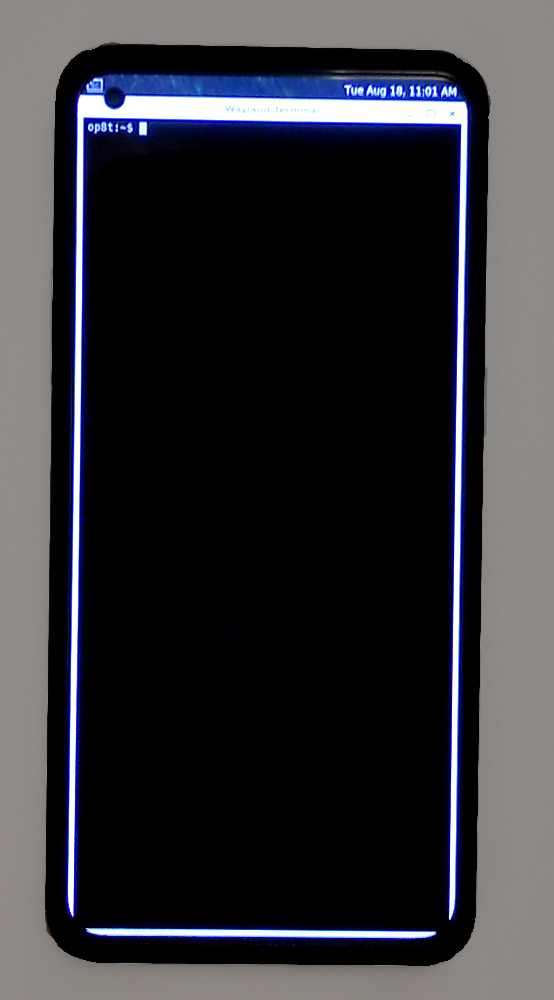

OnePlus 8T (oneplus-kebab)
|
 OnePlus 8T running postmarketOS with weston | |
| Manufacturer | OnePlus |
|---|---|
| Name | 8T |
| Codename | oneplus-kebab |
| Released | 2020 |
| Category | testing |
| Original software | Android 11 |
| postmarketOS kernel | 4.19.110 |
| Hardware | |
| Chipset | Qualcomm Snapdragon 865 5G (SM8250) |
| CPU | Octa-core Kryo 585 (1x2.84 GHz & 3x2.42 GHz & 4x1.8 GHz) |
| GPU | Adreno 650 |
| Display | 1080x2400@120 AMOLED |
| Storage | 128/256GB |
| Memory | 8/12GB |
| Architecture | aarch64 |
{kind=link}
| USB Networking |
Works
|
|---|---|
| Flashing |
Works
|
| Touchscreen |
Works
|
| Display |
Works
|
| WiFi | |
| FDE | |
| Mainline | |
| Battery | |
| 3D Acceleration | |
| Audio | |
| Bluetooth | |
| Camera | |
| GPS | |
| Mobile data | |
| SMS | |
| Calls | |
| USB OTG / USB-C Role switching | |
| NFC | |
| Accelerometer | |
|---|---|
| Magnetometer | |
| Ambient Light | |
| Proximity | |
| Hall Effect | |
| Barometer | |
| Power Sensor | |
| Camera Flash | |
|---|---|
| Keyboard | |
| Touchpad | |
| USB-A | |
| HDMI/DP | |
| Ir TX | |
| Ir RX | |
| Stylus | |
| Haptics | |
| Ethernet | |
| FOSS bootloader | |
Contributors
Users owning this device
- Alfredohno (Notes: Android daily driver, 12/256 KB2003)
- Bdju (Notes: Android primary)
- Coloneyescolon
- EspiDev (Notes: 12/256 GB Android daily driver)
- Treier57lol (Notes: Android daily driver)
- Uclydde (Notes: 12GB/256GB, KB2005 variant)
How to enter flash mode
When powered off:
- Hold power button
- If the device has USB plugged in: wait for the device to vibrate, otherwise it might boot to Qualcomm MSM Mode
- Hold volume up and down
Installation
This device uses dynamic partitions which allows it to merge multiple partitions (including system) into one super partition. PostmarketOS' initramfs can't mount these logical partitions yet. We'll need to flash the rootfs directly onto the super partition.
You can try to dump your original super.img (if you want to restore your original Android installation later) by using
adb pull /dev/block/by-name/super super.img
Follow the postmarketOS porting/installation guide and use
pmbootstrap flasher flash_rootfs
to flash rootfs.
Before booting, you'll have to flash a image to your dtbo partition:
pmbootstrap flasher flash_dtbo
Note: the dtbo.img is only present after a rootfs or initramfs image generation.
Getting back to Android
Since flashing the rootfs overwrites the super partition you'll have to do some extra steps to return to a state where you can normally flash an Android ROM.
Use your backed-up super.img
Before flashing your super.img you'll have to convert it into an sparsed image that fastboot can read:
img2simg super.img super-s.img fastboot flash super super-s.img
Ideally you should be able to boot back into Android after restoring boot and dtbo or after switching to an untouched slot. If Android doesn't boot up or you encounter long loading times, bad performance, missing firmware and spontaneous crashes you should try the following options.
Wipe your super partition using super_empty.img
super_empty.img is a small metadata file you can create with Google's own tools (more research needed) and automatically with the Android Build System. If you have an LineageOS build enviroment set-up you can generate it with
make dist
Wipe the super partition using
fastboot wipe-super super_empty.img
After that you'll be able to flash a LineageOS OTA package. If the partition sizes defined in LineageOS' super_empty.img don't fit your ROM's partitions or if you're still encountering glitches you can follow this guide.
Use MsmDownloadTool
(more testing required) These tools aren't officially distributed by either Qualcomm nor OnePlus and only work under Windows.
Follow this guide.
See also
- pmaports!2420 Initial merge request
- Device package
- Kernel package